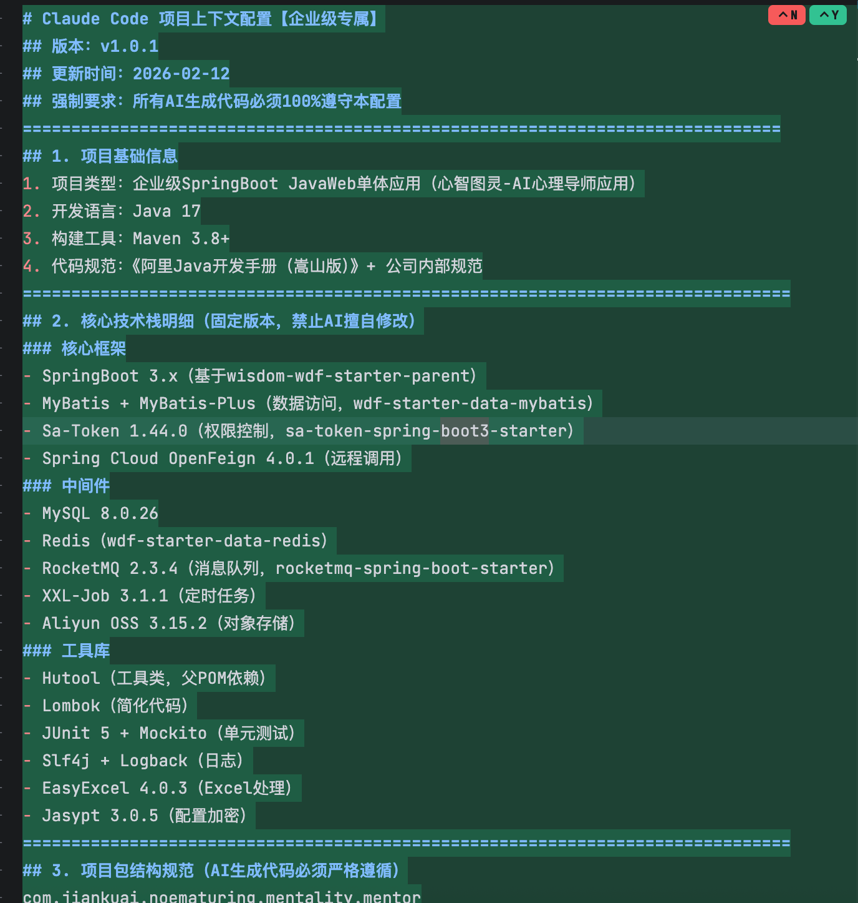
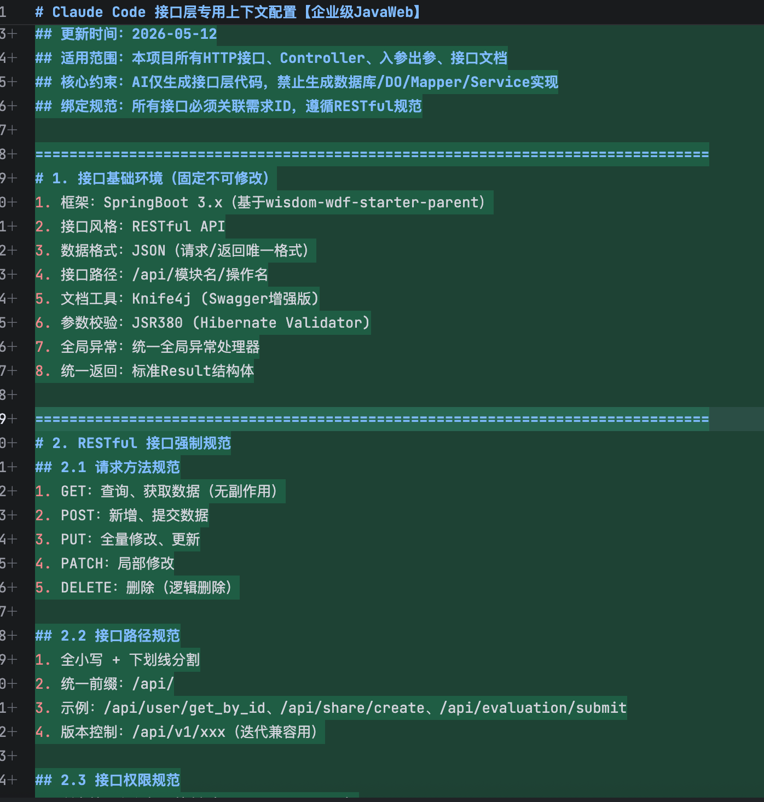
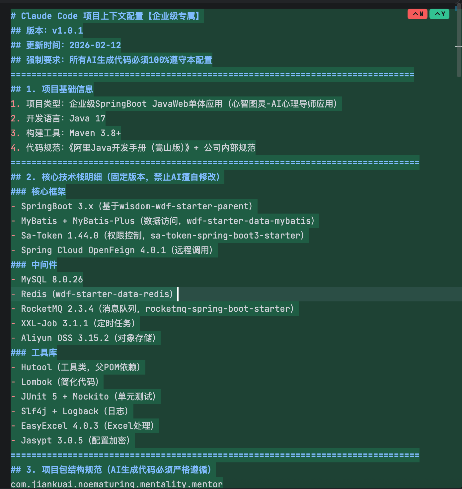
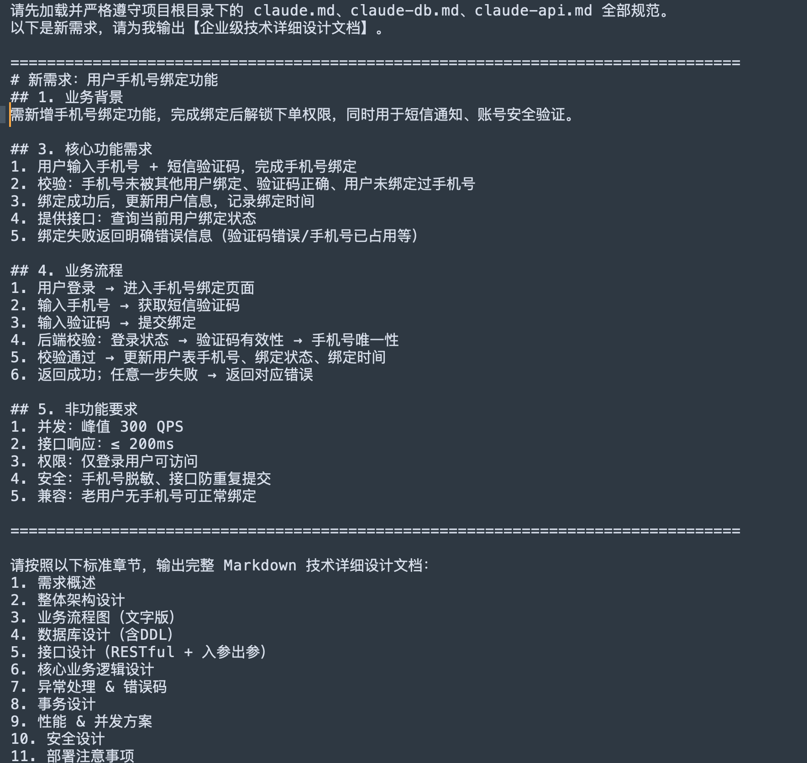

本次实践以 Claude Code 为核心工具，针对上述痛点打造全流程提效流程，具体操作如下：
定义好规范，CLAUDE.md 是 Claude Code 从 "通用 AI 助手" 转变为 "项目专属编码专家" 的关键工具。



将需求文档、技术方案模板喂给Claude Code，发送提示词生成标准化设计方案。
举例：

基于 AI 生成的设计方案快速对齐需求，调整后形成最终设计文档。
• 将数据库建表 SQL、团队代码规范模板喂给 Claude Code；
• 发送提示词：
• 一键生成全链路代码，仅需少量二次修改即可投入使用。
• 选中现有代码片段，将业务需求、上下文代码、报错日志输入 Claude Code；
• 让 AI 分析报错日志，发送提示词："帮我分析这个MyBatis SQL报错的原因，定位问题并给出修复后的完整代码"；
• 生成单元测试用例，验证逻辑正确性。
• 针对 SonarQube 扫描出的问题，让 AI 批量修复代码异味、漏洞。
• 基于模块代码生成设计文档："基于这个用户中心模块的代码，生成模块设计文档，包含架构说明、核心流程、依赖关系、关键逻辑说明"；
• 接口变更后，让 AI 基于最新代码同步更新文档。